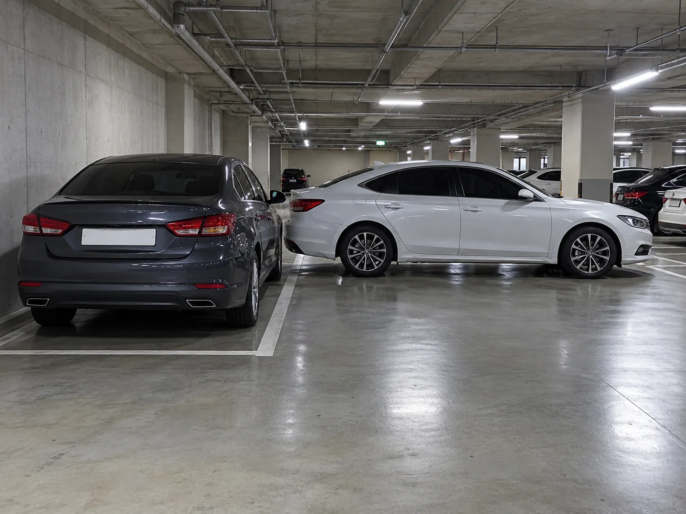
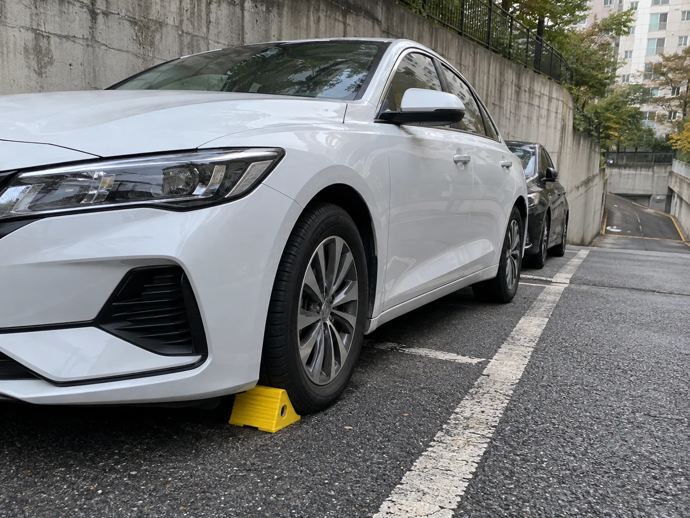
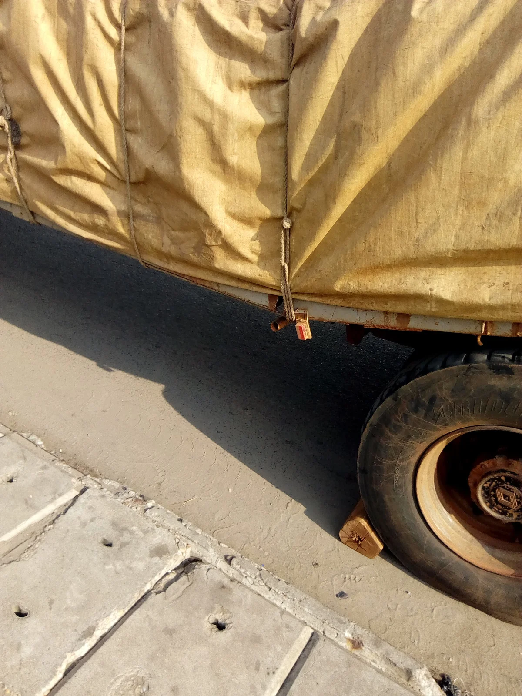
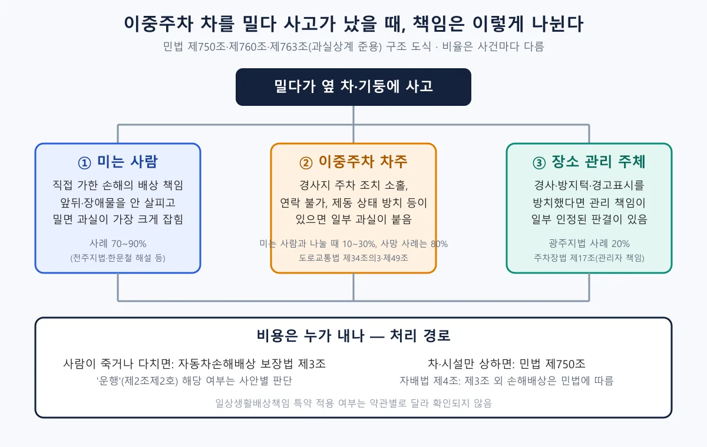
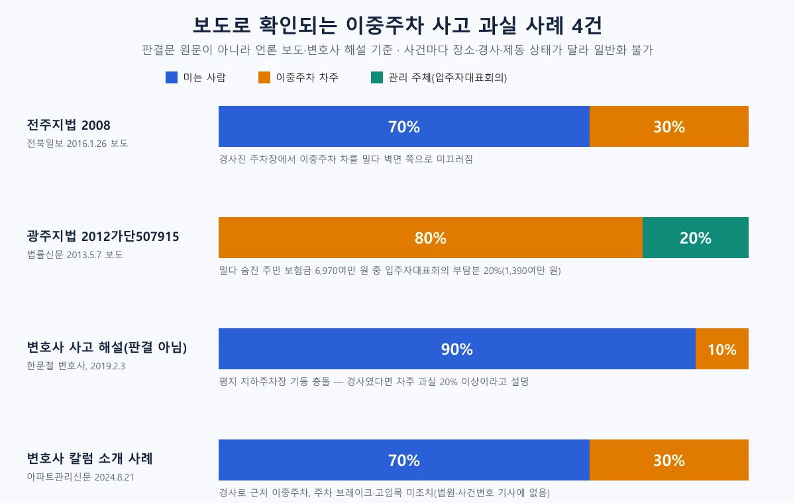
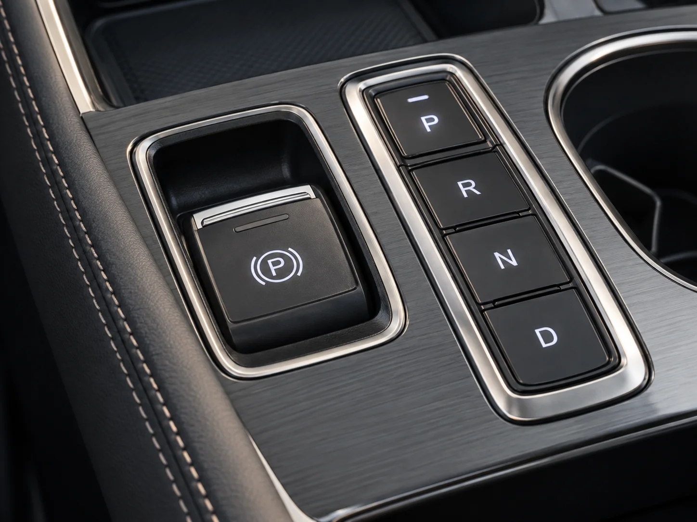
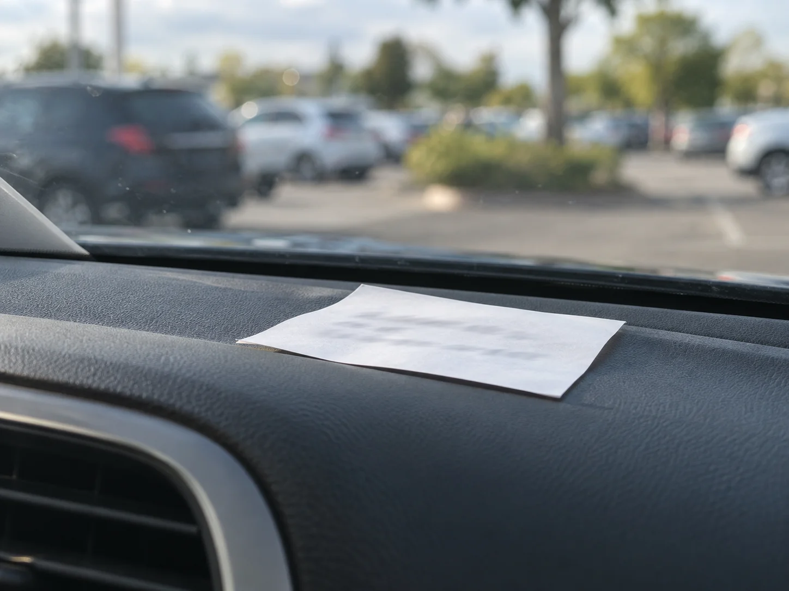
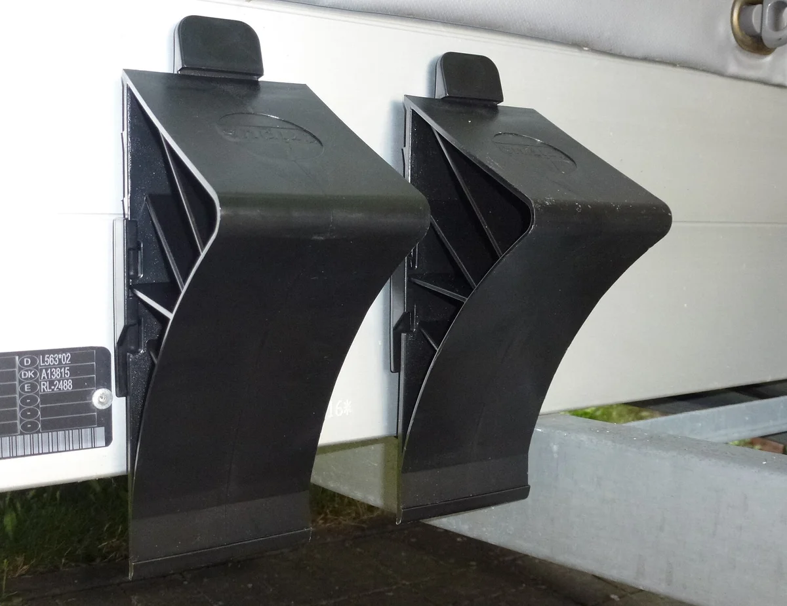
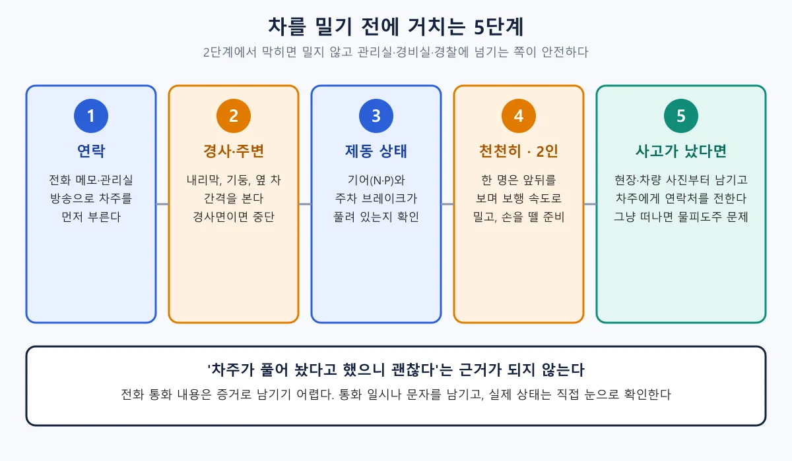

▲ 이중주차 차를 밀기 전에 연락과 제동 상태 확인이 먼저다. 이중주차 상황을 가정한 AI 생성 이미지(실제 사진이 아님) ⓒ 카프리즘 AI 생성 이미지(예시)
"앞차가 이중주차라 못 빠져나가는데, 밀어도 되나요?" 결론부터 말하면 "밀 수는 있지만 사고가 나면 밀던 사람에게 책임이 크게 쏠리는 구조"다. 2026년 10월 15일 기준 국가법령정보센터 Open API로 도로교통법(2026.10.13 시행본)·같은 법 시행령(2026.10.2 시행)·자동차손해배상 보장법·민법·주차장법 현행 원문을 직접 내려받아 확인했고, 언론에 보도된 판결 사례와 변호사 해설, 기아 취급설명서(전동식 주차브레이크)를 함께 대조했다. 판결문 원문은 열람하지 못했고 보도·해설 기준임을 먼저 밝혀 둔다.
1. 이중주차는 불법인가 — "도로냐 아니냐"가 먼저 갈린다
이중주차가 위법인지는 차를 세운 곳이 도로교통법상 도로인지에 달려 있다. 도로교통법 제2조제1호는 도로를 도로법·유료도로법·농어촌도로 정비법상 도로와 "그 밖에 현실적으로 불특정 다수의 사람 또는 차마가 통행할 수 있도록 공개된 장소로서 안전하고 원활한 교통을 확보할 필요가 있는 장소"로 정의한다. 아파트 단지나 상가 주차장이 여기에 해당하는지는 출입 통제 여부와 이용 형태에 따라 달라지며, 조문만으로 일률적으로 정할 수는 없다.
| 구분 | 내용 | 근거 |
|---|---|---|
| 정차·주차 금지 장소 | 교차로·횡단보도·건널목, 교차로 가장자리 5m 이내, 소방용수시설 5m 이내 등에서는 정차·주차 모두 금지 | 도로교통법 제32조 |
| 주차·정차 방법 | 도로에서 정차할 때는 차도 오른쪽 가장자리에, 주차할 때는 시·도경찰청장이 정한 장소·시간·방법에 따라야 하고 다른 교통에 방해가 되지 않아야 한다 | 법 제34조, 시행령 제11조제1항·제2항 |
| 고용주 등 과태료 | 제32조~제34조 위반 정차·주차: 승용자동차등 4만 원, 같은 장소에서 2시간 이상이면 5만 원. 법은 사진 등으로 위반이 입증되고 운전자를 확인할 수 없는 경우 등에 고용주등에게 부과하도록 한다(제160조제3항) | 법 제160조제3항, 시행령 별표 6 제6호·비고 4, 시행령 제88조제2항 |
| 운전자 범칙금 | 정차·주차방법 위반: 승용자동차등 4만 원 | 시행령 별표 8 제31호 |
| 경사진 곳 주차 | 도로 외의 경사진 곳도 포함해 고임목 설치나 조향장치 돌려놓기 등 미끄럼 방지 조치를 해야 하고, 위반하면 승용자동차등 범칙금 4만 원(운전자가 운전석을 떠나지 않고 직접 제동장치를 작동 중이면 시행령상 예외) | 법 제34조의3·제156조제1호, 시행령 제11조제3항, 별표 8 제31의2호 |
| 이동 명령·견인 | 제32조~제34조를 위반해 주차한 차가 교통에 위험을 일으키거나 방해될 우려가 있으면 경찰공무원이나 시·군공무원이 이동을 명하고, 운전자가 없으면 직접 옮길 수 있다. 이동·보관 비용은 차의 사용자가 부담한다 | 법 제35조제1항·제2항·제6항 |
| 도로가 아닌 단지 내 주차장 | 도로교통법 적용 여부가 불분명해 실제로는 관리규약·민사 책임(민법 제750조)으로 정리되는 경우가 많다. 아파트별 관리규약은 단지마다 달라 일괄 확인하지 못했다 | 법 제2조제1호라목, 민법 제750조 |
단지 안 주차장에서는 관리규약이 현실적인 기준이 된다. 공동주택관리법 제18조는 시·도지사가 관리규약 준칙을 정하고, 입주자등이 그 준칙을 참조해 단지별 관리규약을 정하도록 한다. 같은 법 시행령 제19조제1항은 준칙에 '관리규약을 위반한 자 및 공동생활의 질서를 문란하게 한 자에 대한 조치'를 포함하도록 한다. 이중주차 구역 지정 여부, 연락처 부착 의무 같은 세부 조항은 단지마다 달라 일괄 확인하지 못했으므로, 내 단지의 관리규약이나 관리사무소 안내를 먼저 보는 것이 좋다. 아파트관리신문이 소개한 사건에서도 이중주차가 금지되지 않은 구역이었다는 점이 사실관계에 포함됐다.
▲ 구획선 안에 한 대씩 세우는 것이 기본 형태다. 구획이 부족해 이중주차가 생기는 단지에서는 관리규약과 연락 체계가 분쟁을 줄이는 기준이 된다. 한국의 야외 주차장을 위에서 본 모습 ⓒ ume-y / Wikimedia Commons, CC BY 2.0
📍 노외주차장이라면 관리자 책임도 있다
주차장법 제17조제3항은 노외주차장관리자가 "선량한 관리자의 주의의무를 게을리하지 아니하였음을 증명한 경우"가 아니면 주차 중인 자동차의 멸실·훼손에 따른 손해배상 책임을 면하지 못한다고 정한다. 주차 요원이 이중주차를 지시한 곳이라면 사고 책임을 가릴 때 이 조항이 같이 논의될 수 있다(구체적 적용은 사안별 판단이다). 맡긴 차가 상했을 때의 청구 방법은 발렛·세차장 파손 책임 기사에 정리했다.
2. "사이드브레이크를 풀어 두라"는 관행 — 법과 판결은 어떻게 보나
밀기 쉽게 기어를 중립에 두고 주차 브레이크를 풀어 두는 것은 관행일 뿐 법이 요구하는 사항이 아니다. 이번에 확인한 도로교통법·시행령 어디에도 "기어를 중립에 두라"는 문구는 없다. 오히려 제34조의3은 경사진 곳에 정차·주차하려는 자동차 운전자에게 "고임목을 설치하거나 조향장치를 도로의 가장자리 방향으로 돌려놓는 등 미끄럼 사고의 발생을 방지하기 위한 조치"를 하라고 하고, 시행령 제11조제3항은 도로 외의 경사진 곳도 포함해 "자동차의 주차제동장치를 작동한 후"에 고임목 설치, 조향장치 돌려놓기 등을 하라고 구체화한다. 운전자가 운전석을 떠나지 않고 직접 제동장치를 작동하고 있으면 예외다.

▲ 경사진 곳에서는 주차제동장치를 작동한 뒤 고임목을 놓거나 바퀴 방향을 돌려놓아야 한다(시행령 제11조제3항)는 규정을 가정한 AI 생성 이미지(실제 사진이 아님) ⓒ 카프리즘 AI 생성 이미지(예시)

▲ 바퀴 아래에 괴어 차가 구르지 않게 하는 쐐기(고임목)의 실제 사용 모습. 시행령은 경사의 내리막 방향 바퀴에 고임목·고임돌 등을 설치하도록 정한다 ⓒ Rachad sanoussi / Wikimedia Commons, CC BY-SA 4.0
운전자가 차를 떠나는 상황의 일반 규정도 있다. 제49조제1항제6호는 "운전자가 차 또는 노면전차를 떠나는 경우에는 교통사고를 방지하고 다른 사람이 함부로 운전하지 못하도록 필요한 조치를 할 것"이라고 정한다. 위반하면 제156조제1호에 따라 20만 원 이하의 벌금·구류·과료 대상이 될 수 있고, 현장 범칙금은 시행령 별표 8 제53호(운전석 이탈 시 안전 확보 불이행) 묶음 구간의 승용자동차등 3만 원이다. 경사진 곳 주차방법을 어긴 제34조의3 위반은 같은 별표 제31의2호로 승용자동차등 4만 원이다. 다만 이 조문이 "이중주차 차를 중립으로 두라"까지 의미하는지, 제동을 풀어 둔 것이 곧 위반인지는 조문만으로 단정할 수 없다.
법원은 제동 조치 없이 이중주차한 차주에게 일부 책임을 물었다. 법률신문이 보도한 광주지법 사건(2012가단507915 구상금청구)은 화물차 차주가 이중(일렬)주차를 하며 주차 브레이크를 채우지 않고 기어를 중립으로 둔 데다 주차장 바닥이 약간 기울어 있었다. 법원은 차주가 제동 조치를 하거나 돌·버팀목 등으로 차가 주차장 경사에 밀리지 않도록 안전조치를 했어야 한다고 보았다. 장성학 변호사가 아파트관리신문(2024.8.21)에 쓴 칼럼이 소개한 법원 판결에서도 내리막 경사와 가까운 곳에 이중주차한 차주가 고임목 설치나 주차 브레이크 체결 같은 조치를 소홀히 했다는 점이 30% 과실의 근거로 설명된다. 즉 "풀어 두면 편하다"는 관행은 평지에서는 큰 문제가 되지 않을 수 있어도, 경사에서는 차주에게 불리하게 작용했다.
3. 밀다 사고 나면 누가 얼마나 책임지나 — 보도로 확인되는 4건
사고가 나면 법적 뼈대는 민법 제750조(고의 또는 과실로 인한 위법행위로 타인에게 손해를 가한 자의 배상 책임)다. 여러 사람의 행위가 겹치면 제760조의 공동불법행위, 피해자나 다른 쪽에 과실이 있으면 제763조가 준용하는 제396조의 과실상계로 비율이 나뉜다. 이중주차 차주 입장에서는 차를 막아 둔 잘못, 미는 사람 입장에서는 연락하지 않고 밀거나 주변을 살피지 않은 잘못이 각각 비율에 반영된다.

▲ 책임은 세 갈래로 나뉠 수 있다. 숫자는 보도로 확인된 사례일 뿐 일반 기준이 아니다 ⓒ 카프리즘 제작 도표(민법·자동차손해배상 보장법·도로교통법 현행 조문 기준)
| 출처 | 상황 | 과실 비율 | 확인 수준 |
|---|---|---|---|
| 전주지법 2008년(전북일보 2016.1.26) | 전주영상정보진흥원 내 주차장에서 이중주차 차를 밀다 경사가 급해 차가 멈추지 않고 건물 벽면 쪽으로 미끄러짐. 재판부는 "차주에게 연락해 이동시킬 수 있었음에도 무리하게 움직인" 점을 지적(사이드브레이크 상태는 기사에 없음) | 미는 사람 70% : 차주 30% | 보도(선고일·사건번호 기사에 없음) |
| 광주지법 2012가단507915(법률신문 2013.5.7) | 아파트 주차장에서 이중주차 화물차(주차브레이크 미체결·기어 중립, 바닥 약간 경사)를 밀던 주민이 옹벽 사이에 끼여 2009년 12월 사망. 차주 가입 보험사가 약 6,970만 원을 지급한 뒤 입주자대표회의에 구상 | 차주 80% : 입주자대표회의 20%(1,390여만 원 지급 판결) | 보도(선고일은 "최근"으로만 표기) |
| 변호사 해설(법률방송, 한문철, 2019.2.3) | 아파트 지하주차장에서 이중주차 차를 약 1.5m 밀다 기둥에 충돌. 앞뒤를 보며 기둥과 부딪힐 가능성을 미리 살폈어야 한다는 취지이고, 경사진 곳이었다면 차주 과실이 20~30%까지 인정되는 경우도 있다고 설명. 상대방은 60 대 40을 주장했다고 소개 | 미는 사람 90% : 차량 주인 10% | 판결이 아니라 사고 해설 |
| 변호사 칼럼(아파트관리신문, 2024.8.21) | 이중주차가 금지되지 않은 구역에서 주민들이 주차브레이크 없이 기어 중립인 차를 경사로 방향으로 밀어 2단 방지턱 위에 세워 두고 자리를 떴고, 약 20초 뒤 차가 방지턱을 넘어 내려가 주차된 차들을 충돌. 차주는 내리막 가까이에 세우고 고임목·주차 브레이크를 쓰지 않음. 보험사가 지급 뒤 주민들에게 구상 | 미는 주민 70% : 차주 30% | 법원·사건번호 기사에 없음 |

▲ 파랑은 미는 사람, 주황은 이중주차 차주, 초록은 관리 주체. 사건마다 경사·제동 상태·연락 가능 여부가 달라 한 줄로 일반화할 수 없다 ⓒ 카프리즘 제작 도표(법률신문·전북일보·법률방송뉴스·아파트관리신문 보도 기준)
사례를 겹쳐 보면 공통점이 있다. 밀기 전 연락·확인을 하지 않았거나 민 뒤 차 상태를 확인하지 않고 떠났다면 미는 쪽 비율이 크고(70~90%), 경사와 제동 미조치가 겹치면 차주 비율이 올라간다. 전주지법 사례는 연락이 가능했는데도 무리하게 밀었다는 점이, 아파트관리신문 사례는 밀어 둔 차를 확인하지 않고 떠난 점이 지적됐다. 한문철 변호사는 이런 사고를 교통사고로 보지 않고 형사처벌 규정이 없는 민사책임 문제라고 설명했다(해설). 광주 사건처럼 미는 사람이 숨진 경우에는 차주 측 보험이 큰 금액을 지급했고 일부를 관리 주체에게 구상한 구조였다. 다만 이 사건은 "누가 얼마를 물어야 하는지"가 보험사와 입주자대표회의 사이에서 다퉈진 것으로, 일반 이중주차 사고에서 차주가 80%를 진다는 뜻이 아니다. 법률신문에 따르면 재판부는 입주자대표회의에 대해서도 같은 장소에서 입주민이 숨진 사고가 이전에 있었는데 주차장 경사를 면밀히 조사해 방지턱 설치·경고 표시 등을 했어야 한다며 20% 책임을 인정했다. 즉 사고 장소의 경사와 안전시설을 관리하는 쪽도 책임 비율에 들어올 수 있다.
4. 보험은 되나 — 자동차보험·일상생활배상 가능성과 한계
밀다 난 사고가 자동차보험으로 처리되는지는 "운행"에 해당하는지에 달려 있다. 자동차손해배상 보장법은 "운행"을 "사람 또는 물건의 운송 여부와 관계없이 자동차를 그 용법에 따라 사용하거나 관리하는 것"(제2조제2호)으로 정의하고, 자기를 위하여 자동차를 운행하는 자는 그 운행으로 다른 사람을 사망하게 하거나 부상하게 한 경우 손해를 배상할 책임을 진다(제3조). 제3조 외의 손해배상은 민법에 따른다(제4조). 법률신문 기사에 인용된 한 법조인은 법원이 자동차 운행 개념을 넓게 인정하므로 주차 중 사고도 보험금 지급 대상이 될 수 있다고 설명했다. 이 설명이 모든 이중주차 밀기에 적용된다는 근거는 이번에 확인하지 못했다.
| 피해 | 법적 틀 | 현실적인 경로 | 확인 수준 |
|---|---|---|---|
| 사람이 죽거나 다침 | 자배법 제3조, 민법 제750조 | 차주가 가입한 보험사가 유족에게 지급한 뒤 입주자대표회의에 구상한 사례(광주지법) | 법률신문 보도 |
| 내 차·옆 차 수리비 | 민법 제750조, 제396조 준용(자배법 제5조제2항은 자동차 운행으로 타인의 재물이 멸실·훼손된 경우의 배상을 위한 보험 가입도 의무로 정함) | 당사자 합의 또는 보험사 간 협의. 아파트관리신문 사례는 보험사가 피해 차 소유주들에게 대물, 이중주차 차주에게 자차 보험금을 지급한 뒤 밀었던 주민들에게 구상했다. 전북일보 사례는 밀던 운전자가 70% 이상 책임을 질 것을 우려해 보험 대신 합의금 5만 원을 건넴 | 보도(합의금은 2016년 전북일보가 전한 사적 사례) |
| 밀던 사람이 가입한 보험 | 일상생활배상책임(개인배상) 특약 | 적용 여부는 약관별로 다름. 이번에 보험사 약관 원문은 열람하지 못함 | 확인되지 않음 |
| 관리 주체의 시설 하자 | 민법 제750조 등, 경사·표지 방치 | 입주자대표회의 구상(광주지법 사례 20%) | 법률신문 보도 |
보험 할증 여부와 자기부담금이 걸린 판단은 주차장 긁힘 보험 처리 vs 자비 수리 기사의 가정 계산을 먼저 참고할 만하다.
5. 전동식 주차브레이크·전기차·자동변속 — "중립 밀기"는 어디까지 가능한가
레버식 사이드브레이크 시절의 감각으로 밀 수 있는 차는 점점 줄고 있다. 전동식 주차브레이크(EPB) 차는 걸려 있는 EPB가 기어를 N으로 바꾼다고 풀리지 않는다. 기아 취급설명서는 EPB 장착 차에서 N으로 옮겨도 EPB가 자동으로 풀리지 않는다고 안내하고, 해제는 브레이크 페달을 밟은 채 EPB를 수동으로 풀라고 한다. 이 설명서 기준으로 EPB가 걸린 차를 밀려면 먼저 차 안에서 해제하는 조작이 필요하다.

▲ 전동식 주차브레이크 스위치와 버튼식 변속기를 가정한 AI 생성 이미지(실제 사진이 아님). 실제 위치와 조작은 차종마다 다르다 ⓒ 카프리즘 AI 생성 이미지(예시)
| 방식 | 밀기 가능 조건 | 한계 | 근거 |
|---|---|---|---|
| 레버식 사이드브레이크 + 자동변속 | 기어 N, 브레이크 해제 | P로 두면 변속기가 잠겨 밀기 어렵다는 점은 일반적 설명이며 차종별 확인 필요 | 일반적 설명(문서 확인 못함) |
| EPB 차 | 차주가 N으로 두고 EPB를 풀어 둔 상태 | EPB가 걸려 있으면 N으로 바꿔도 자동 해제되지 않고, 설명서는 브레이크 페달을 밟은 채 수동 해제하라고 안내 | 기아 취급설명서 |
| 시동을 끈 채 N 유지 | 차종이 지원하고 취급설명서 절차를 따랐을 때 | 기아 해당 차종 설명서는 시동 ON 상태에서 오토홀드를 끄고 주차브레이크를 푼 뒤 N으로 옮기고, 브레이크 페달을 뗀 다음 스티어링 휠 OK 버튼을 1초 이상 누르고 안내 메시지 뒤 시동 버튼을 누르는 절차를 안내. ACC 상태에서 30분 안에 운전석 문을 열면 P로 자동 전환되고 EPB가 체결됨 | 기아 취급설명서(차종 미표기) |
| 테슬라 | 확인되지 않음 | 테슬라 모델 3 설명서에 견인(Tow) 모드가 있다는 검색 결과는 있으나 제조사 원문 접속이 막혀 내용을 확인하지 못했고, 이중주차 밀기용으로 안내하는지도 확인되지 않았다 | 미확인(원문 열람 실패) |
버튼식 변속과 전자제어 P단을 쓰는 차는 "기어 중립"을 유지하는 방식이 차마다 다르다. 위 기아 설명서처럼 일정 시간 안에 운전석 문을 열면 P로 돌아가는 보호 기능이 있는 차도 있어, 밀기 쉽도록 N을 유지해 달라는 요청이 실제로 가능한지는 해당 차종 취급설명서로만 확인된다. 이중주차를 하는 차주 입장에서는 내 차가 N 유지·EPB 해제를 지원하는지 모른다면, 차를 막는 상황 자체를 피하거나 연락처를 남겨 직접 비워 주는 쪽이 낫다.
📍 밀기보다 먼저 확인할 것
이중주차 차의 제동·기어 상태는 밖에서 보이지 않는다. 밀기 전에 차주나 경비실에 연락해 도움을 받으라는 것이 전북일보가 전한 교통안전공단 관계자의 당부이고, 이번에 확인한 사례들도 연락이 가능했는지가 과실 판단의 핵심이었다.
6. 연락처 남기기부터 신고까지 — 그냥 두고 가면 안 되는 이유
이중주차를 하는 쪽과 밀어야 하는 쪽 모두 연락 수단이 증거가 된다. 앞유리에 연락처를 남겨 두는 것이 가장 기본이고, 전북일보 보도에서 교통안전공단 관계자는 진로가 막히면 직접 해결하려 하지 말고 이중주차 차주나 경비원에게 연락해 도움을 받으라고 권했다. 연락이 닿지 않거나 도로에서 통행을 막고 있다면 경찰이나 지자체 주정차 단속 부서에 알리는 방법이 있다. 도로에서는 법 제35조에 따라 경찰공무원·시·군공무원이 이동을 명하거나 직접 옮길 수 있고, 비용은 차의 사용자가 부담한다.

▲ 이중주차 때는 연락처 메모를 앞유리 안쪽에 보이게 두는 것이 기본이다. 글자를 비운 AI 생성 이미지(실제 사진이 아님) ⓒ 카프리즘 AI 생성 이미지(예시)
✅ 이중주차 차를 밀어야 할 때의 순서
· 1단계: 앞유리 메모·관리실 방송으로 차주에게 먼저 연락한다. 연락 시도 시각과 통화 내용은 기록으로 남긴다
· 2단계: 경사·기둥·옆 차와의 간격을 눈으로 확인한다. 내리막이거나 막혀 있으면 밀지 않는다
· 3단계: 기어와 주차 브레이크가 풀려 있는지 직접 확인한다. "풀어 놨다"는 전화 한 통은 근거가 되지 않는다
· 4단계: 2명 이상, 보행 속도로 밀고 한 명은 앞뒤를 본다
· 5단계: 사고가 나면 사진을 남기고 차주에게 연락처를 전한다. 그냥 떠나면 분쟁이 커진다
✅ 이중주차를 하는 차주 쪽에서 할 일
· 가능하면 이중주차 자체를 피한다. 교통안전공단 전북지사 관계자도 주차공간이 부족해도 이중주차·가로주차를 하지 말라고 당부했다
· 하더라도 내리막 경사 가까이에는 세우지 않는다. 경사진 곳에서는 주차제동장치를 작동한 뒤 고임목을 놓거나 바퀴를 돌려놓아야 한다(시행령 제11조제3항)
· 앞유리에 연락처를 남기고 전화를 받을 수 있는 상태를 유지한다. 전북일보가 전한 2016년 사고에서는 차주가 전화를 받고도 "그냥 밀면 될텐데"라고 답했고, 밀던 운전자의 차가 기둥에 접촉했다
· 기어 N·EPB 해제 상태로 두어도 되는 차종인지는 취급설명서로 확인한다

▲ 플라스틱 고임목은 차에 싣고 다니기 쉬운 형태로 나온다. 경사진 곳에 세워야 할 때 바퀴 내리막 쪽에 괴는 용도다(제품·규격은 사진과 무관) ⓒ UlrichHeither / Wikimedia Commons, CC BY-SA 3.0

▲ 밀기 전에 거치는 5단계. 2단계에서 막히면 밀지 않고 관리실·경비실·경찰에 넘기는 쪽이 안전하다 ⓒ 카프리즘 제작 도표
연락처를 남기지 않고 떠나는 문제는 이 기사 범위를 넘는다. 주·정차된 차만 손괴한 것이 분명한데 피해자에게 인적 사항을 제공하지 않으면 도로교통법 제156조제10호로 20만 원 이하 벌금·구류·과료 대상이 되는데, 이중주차 차를 밀어 손괴한 경우가 제54조의 "교통사고"에 들어가는지는 조문만으로 단정하지 않았다. 일반적인 주차장 접촉 후 연락처 의무와 범칙금은 주차장 물피도주 범칙금·연락처 기사에 정리했다.
7. 요약
이중주차 차를 밀다 사고가 나면 밀던 사람 책임이 크지만, 경사에서 제동 조치를 안 한 차주도 일부 책임을 진다. 보도로 확인되는 사례는 전주지법 70% 대 30%, 아파트관리신문이 소개한 판결 70% 대 30%, 광주지법 차주 80% 대 입주자대표회의 20%, 변호사 해설 90% 대 10%다. 판결문 원문은 열람하지 못했고, 경사·제동 상태·연락 가능 여부가 비율을 좌우한다.
"사이드브레이크를 풀어 두라"는 문구는 법에 없고, 경사지에서는 주차제동장치 작동과 고임목 등이 법적 요구다. 도로교통법 제34조의3·시행령 제11조제3항, 제49조제1항제6호(승용 범칙금 3만 원)가 근거다. EPB가 걸린 차는 N으로 바꿔도 자동으로 풀리지 않으므로(기아 설명서 기준) 밀기 전에 차주·경비실 연락이 먼저이며, 보험(일상생활배상 특약 등) 적용은 약관 확인이 필요하다. 2026년 10월 15일 현재 법령 기준이다.